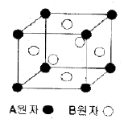
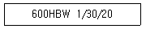
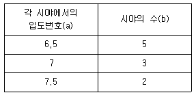
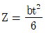
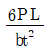
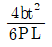
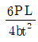
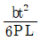
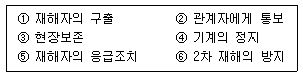

금속재료기능장 (2011-07-31 기출문제)
1과목: 임의 구분
1. 순철의 동소변태와 관계가 없는 것은?
- 체적의 변화
- 격자사수의 변화
- 자성의 변화
- 결정구조의 변화
(정답률: 89%)

2. 처음에 주어진 특정 모양의 것이 인장 등으로 소성 변형된 다음에도 가열에 의하여 원래의 모양으로 돌아가는 현상을 이용한 합금은?
- 수소저장합금
- 초내열합금
- 형상기억합금
- 고강도합금
(정답률: 96%)
3. 뜨임 균열의 방지대책에 대한 설명으로 옳은 것은?
- 제품에 가열을 가급적 빨리한다.
- 제품에 잔류응력을 잔류시킨다.
- Cr, Mo, V 등의 함금원소를 첨가한다.
- 고속도강과 같은 경우에는 뜨임을 하기 전에 탈탄증을 남게 하여 뜨임 후 수냉한다.
(정답률: 83%)
4. 탄소의 함량이 0.42~0.48% 인 SM45C 재질의 담금질(quenchibg) 온도로 가장 적당한 것은?
- 약 100~150℃
- 약 450~500℃
- 약 820~870℃
- 약 1⑤0~1100℃
(정답률: 82%)
5. [그림]과 같이 면심입방격자(FCC)로 된 A 원자와 B 원자의 규칙격자 원자배열에서 A 와 B 의 조성을 나타내는 것은?

- AB
- A2B
- A3B
- AB3
(정답률: 89%)
6. 시퀀스 제어계에서 제어시키고자 하는 장치 혹은 기기를 무엇이라 하는가?
- 제어대상
- 제어명령
- 조작부
- 검출부
(정답률: 88%)
7. 전기 회로 중에서 OR회로에 대한 설명으로 옳은 것은?
- 입력이 여러 개 있을 떄 그 입력 접점의 신호 어느 하나만 들어오면 출력 측이 동작하게 되는 회로
- 입력이 여러 개 있을 때 그 여러 개의 입력 접점 신호가 모두 들어와야만 출력이 나타나는 회로
- 입력 측에 전압이 가해지면 바로 출력 측에 신호가 나타나지 않고, 일정시간이 지나야 출력 신호가 나타나는 회로
- 어떤 전기적인 기기를 사용할 때 잘못된 조작으로 인해 발생하는 기계의 파손이나 작업자의 위험을 방지하고자 할 때 사용되는 회로
(정답률: 94%)
8. 마텐자이트 변태에 대한 설명 중 틀린 것은?
- 원자의 확산을 수반하지 않는 변태이다.
- 팽창을 수반하여 이로 인해 담금질 균열이 발생한다.
- 냉각속도를 빨리해서 변태를 저지할 수 있다.
- 마텐자이트 변태는 강을 담금질할 때 생기며 경도가 높다.
(정답률: 73%)
9. 강에 대한 인(P)의 설명으로 틀린 것은?
- 상온취성의 원인이 된다.
- 입자의 조대화를 촉진시킨다.
- 탄소량이 증가할수록 인(P)의 나쁜점을 감소한다.
- Fe3P는 MnS 또는 MnO 와 집합하여 ghost line을 형성하여 강의 파괴 원인이 된다.
(정답률: 75%)
10. 다이캐스팅용 Al 합금으로 요구되는 성질 중 틀린 것은?
- 유동성이 좋을 것
- 열간취성이 적을 것
- 금형에 대한 점착성이 좋을 것
- 응고수축에 대한 용탕 보급성이 좋을 것
(정답률: 84%)
11. 한국산업표준(KS B 08⑤)에서 [보기]의 표기에 대한 설명으로 틀린 것은?

- 1은 1mm 지름의 누르개를 의미한다.
- 600은 브리넬 경도값을 의미한다.
- W는 초경 합금구를 의미한다.
- 30은 10kgf의 시험하중으로 30초 동안 누른 것을 의미한다.
(정답률: 87%)
12. 침투탐상시험법에서 현상방법에 따른 명칭과 기호가 옳게 짝지어진 것은?
- 건식 현상법 - E
- 무현상법 - D
- 속건식 현상법 - F
- 특수 현상법 - N
(정답률: 70%)
13. 시험체를 가압 또는 감압하여 일정한 시간이 지난 후 압력변화를 계측하여 누설검사하는 방법은?
- 기포 누설검사
- 암모니아 누설검사
- 방치법에 의한 누설검사
- 전위차에 의한 누설검사
(정답률: 87%)
14. 마그네슘 및 그 합금에 대한 설명으로 틀린 것은?
- 마그네슘의 융점은 약 650℃ 정도이다.
- 마그네슘의 비중은 약 1.74 정도이다.
- 엘렉트론은 Mg-Al 에 Zn과 Mn 을 첨가한 합금이다.
- 마그네슘합금은 고온에서 잘 산화가 되지 않으며, 탈가스처리를 필요하지 않다.
(정답률: 88%)
15. 주철을 흑연의 형상에 따라 분류할 때 괴상흑연을 갖는 주철은?
- 회주철
- 가단주철
- 백주철
- 구상흑연주철
(정답률: 70%)
16. 니켈-크롬강에서 담금질 및 뜨임 후 나타나는 뜨임 취성을 방지하기 위하여 첨가하는 합금 원소로 가장 적합한 것은?
- Mo
- Si
- Mn
- Cu
(정답률: 73%)
17. 설퍼 프린트(sulfur print)법은 어느 원소의 분포상태를 알기위한 시험인가?
- P
- S
- Cu
- Mo
(정답률: 98%)
18. 고속, 고하중에 적합한 베어링용으로 사용되는 Cu-Pb 계 합금은?
- 크로멜(Chromel)
- 켈멧(Kelmet)
- 슈퍼인바(Super invar)
- 백 메탈(Back metal)
(정답률: 92%)
19. 흑체로부터의 복사선 중에서 가시광선만을 이용하는 온도계로 보통 적색 단색광을 이용하는 것은?
- 광고온계
- 방사 온도계
- 팽창온도계
- 열전쌍 온도계
(정답률: 94%)
20. 고탄소 고크롬강을 심랭처리 했을 때 균열이 발생하는 원인이 아닌 것은?
- 담금질 온도가 높은 경우
- 표면에 탈탄층이 있는 경우
- 탄화물이 미세한 경우
- 잔류오스테나이트가 많은 경우
(정답률: 64%)
2과목: 임의 구분
21. 무확산 변태 조직으로 경도가 가장 높은 것은?
- 펄라이트
- 페라이트
- 마텐자이트
- 오스테나이트
(정답률: 86%)
22. 전기 용접 작업시 감전방지를 위한 유의사항으로 틀린 것은?
- 전격 방지기를 사용하지 말 것
- 신체, 의복 등에 물기가 없도록 할 것
- 홀더, 케이블, 용접기의 절연과 접속을 완전히 할 것
- 절연이 좋은 장갑과 신발 및 작업복을 사용할 것
(정답률: 98%)
23. 강재표면에 얇은 황화층을 형성하는 방법으로 마찰 저항을 작게 하여 윤활성을 향상시키는 처리법은?
- 침탄법
- 질화법
- 침황법
- 크로마이징법
(정답률: 94%)
24. 오스테나이트계 스테인리스강 용접부 탐상시 초음파의 감쇠원인이 아닌 것은?
- 결정립의 크기
- 탄화물의 석출
- 마이크로 균열
- 낮은 검사 주파수
(정답률: 70%)
25. 현재 사용되고 있는 스테인리스강 4가지 종류에 해당되지 않는 것은?
- 페라이트계 스테인리스강
- 펄라이트계 스테인리스강
- 마텐자이트계 스테인리스강
- 석출경화계 스테인리스강
(정답률: 61%)
26. 황동의 종류와 그에 따른 설명으로 틀린 것은?
- 네이벌 황동 : 6-4황동에 Sn을 첨가한 합금으로 용접봉, 밸브 등에 사용된다.
- 니켈 황동 : 7-3황동에 Ni을 첨가한 합금으로 양은 또는 양백이라고도 불리는 합금이다.
- 애드미럴티 황동 : 5-5황동에 Sn을 첨가한 합금으로 전연성이 좋아 선박부품 등의 주물에 사용된다.
- 두라나 메탈 : 7-3황동에 2%Fe과 소량의 Sn, Al을 넣은 것으로 주조재 및 가공재로 사용된다.
(정답률: 64%)
27. 탄소강 중 원소의 영향을 설명한 것으로 틀린 것은?
- Cu는 보통 0.3% 이하로 제한되고, 부식에 대한 저항성을 증가시킨다.
- N2 는 제강할 때 핀 홀(pin hole)을 만들며, 백점의 원인이 된다.
- Mn의 일부는 페라이트에 고용되고, 일부는 황과 결합하여 MnS 로 존재한다.
- Si는 페라이트 중에 고용되어 강의 인장강도, 탄성 한계 등은 감소시키나 단접성을 좋게 한다.
(정답률: 63%)
28. 초음파탐상시험에서 탐촉자 재료 중 수신효율이 가장 우수한 것은?
- 수정
- 황산리튬
- 티탄산바륨
- 니오비움산납
(정답률: 73%)
29. 불스아이(Bull's eye) 조직이 나타나는 주철은?
- 칠드주철
- 고급주철
- 가단주철
- 구상흑연주철
(정답률: 68%)
30. 로크웰 경도 측정시 C 스케일로 측정하기에 가장 적합한 재료와 압입자의 각도는?
- 재료 : 동합금, 압입자의 각도 : 136˚
- 재료 : 연강, 압입자의 각도 : 120˚
- 재료 : 알루미늄 합금, 압입자의 각도 : 136˚
- 재료 : 경화시킨 고탄소강, 압입자의 각도 : 120˚
(정답률: 73%)
31. 자분탐상시험에서 원형 자장을 발생시키지 않는 검사법은?
- 코일법
- 프로드법
- 축 통전법
- 전류 관통법
(정답률: 65%)
32. [표]를 이용하여 입도 번호를 계산한 값은?

- 3.9
- 4.9
- 5.9
- 6.9
(정답률: 83%)
33. 반자성체에 해당하는 금속으로 같은 극이 생겨서 서로 반발하는 금속은?
- Fe
- Mn
- Au
- Al
(정답률: 76%)
34. 시편을 화학적 방법으로 특수한 조직성분만을 뽑아내서 용해시키고 다른 상들은 약하게 부식시키는 것으로 각 성분의 크기 형상 및 입체적인 배열을 확인할 수 있는 부식 방법은?
- 가열 부식
- 전해 부식
- Wipe 부식
- Deep 부식
(정답률: 81%)
35. 온도측정용으로 사용되는 열전대 재료 중 가장 높은 온도를 검출할 수 있는 것은?
- S(PR : Pt.Rh-Pt)
- J(IC : Fe-constantan)
- K(CA : chromel-alumel)
- T(CC : Cu-constantan)
(정답률: 86%)
36. 일반적으로 원자가가 4가인 산화물을 주성분으로하는 내화재로 규산을 다량으로 함유하는 것은?
- 중성 내화재
- 산성 내화재
- 염기성 내화재
- 호기성 내화재
(정답률: 68%)
37. 매크로(Macro) 조직검사는 몇 배 이내의 배율로 확대하여 시험하는가?
- 10배
- 50배
- 100배
- 200배
(정답률: 70%)
38. SM45C 의 강이 공석점 직하에서 펄라이트의 조직양은 약 얼마인가? (단, 공석점의 탄소함유량은 0.85% 이다.)
- 29%
- 53%
- 69%
- 73%
(정답률: 67%)
39. 섬유강화금속의 2차 가공에 대한 설명으로 틀린 것은?
- 섬유의 손상이나 배향이 흐트러지지 않도록 가공재나 소재를 취급해야 한다.
- 섬유와 기지의 탄성, 소성변형률 및 열팽창률이 비슷하기 때문에 가공 작업이 쉽다.
- 가열을 수반하는 가공에서는 섬유와 기지(matrix) 사이의 계면반응에 의한 특성열화에 유의한다.
- 일반적으로 섬유는 단단하고 기지는 부드러우므로 절삭성의 차이에 유의한다.
(정답률: 75%)
40. 알루미늄 합금 중에서 개량 처리(modified treatment)를 해야만 좋은 기계적 성질을 얻을 수 있는 합금계는?
- Al - C
- Al - Si
- Al - Cu
- Al - Co - Mn
(정답률: 83%)
3과목: 임의 구분
41. 열처리시 발생하는 변형에 대한 설명이 틀린 것은?
- 변형을 적게 하기 위하여 마템퍼링을 실시한다.
- 변형을 적게 하기 위하여 오스템퍼링을 실시한다.
- 물담금질 → 기름담금질 → 공기담금질의 순서로 변형이 적어진다.
- 균일한 냉각을 하기 위해서는 축이 긴 물건은 수평으로 매달아 담금질하면 변형이 적다.
(정답률: 80%)
42. 탄소강 중에서 망간(Mn)의 영향이 아닌 것은?
- 담금질 효과를 증대시킨다.
- 고온에서 결정립 성장을 증대시킨다.
- 강도, 경도, 인성을 증대시킨다.
- 점성을 증가시키고, 고온 가공성을 향상시킨다.
(정답률: 52%)
43. 강재를 열처리하여 경화시킬 때 균열과 변형을 일으키지 않는 가장 적합한 작업법은?
- Ar' 구역을 서냉하고, Ar" 구역을 급냉한다.
- Ar' 구역과 Ar" 구역을 급냉한 다음 뜨임처리 한다.
- Ar' 구역을 급냉하고, Ar" 구역은 서냉한다.
- Ar' 구역에서 항온변태 시킨 후 Ar" 구역을 급냉한다.
(정답률: 78%)
44. 고속도 공구강(SKH51)이 경도 HRC 63 이상의 값을 갖기 위한 담금질 온도 및 뜨임 온도로 옳은 것은?
- 담금질 온도 : 780~850℃, 뜨임온도 : 200~270℃
- 담금질 온도 : 1000~1⑤0℃, 뜨임온도 : 450~500℃
- 담금질 온도 : 1200~1240℃, 뜨임온도 : 540~570℃
- 담금질 온도 : 1300~1360℃, 뜨임온도 : 600~650℃
(정답률: 75%)
45. 열간가공의 특징으로 틀린 것은?
- 강괴 중의 기공이 압착된다.
- 재결정 온도 이하에서 가공하는 방법이다.
- 가공 전의 가열과 가공중의 고온유지로 편석이 경감 된다.
- 비금속개재물이 가공방향으로 늘어나 섬유상조직이 된다.
(정답률: 86%)
46. 강의 오스테나이트구역 확대형 원소끼리 묶여진 것은?
- W, Cr, Mo, Co
- Si, Cr, H, V
- Cr, Mg, V, C
- C, N, Cu, Au
(정답률: 70%)
47. 비파괴검사 시험법 중에서 내부 결함 검출에 주로 사용되며, 면상의 결함 검출 능력이 우수한 시험법은?
- 방사선투과시험
- 침투탐상시험
- 와전류탐상시험
- 초음파탐상시험
(정답률: 84%)
48. 굽힘강도 시험시 시험편 단면이 장방형일 때

를 사용하여 응력을 구하는 식으로 옳은 것은? (단, P : 굽힘강도, L : 지점간의 거리, Z = 단면계수, b : 시험편의 폭, t : 시험편의 두께)



(정답률: 65%)
49. [보기]에서 재해 발생시 긴급조치 순서로 가장 적절한 것은?

- ① → ② → ③ → ④ → ⑤ → ⑥
- ③ → ① → ② → ④ → ⑤ → ⑥
- ④ → ① → ⑤ → ② → ⑥ → ③
- ⑥ → ⑤ → ④ → ③ → ② → ①
(정답률: 90%)
50. 부식에 의해 강재 단면 전체 또는 중심부에 육안으로 볼 수 있는 크기로 점상의 구멍이 생긴 것의 매크로 조직 명칭은?
- 파이프(pipe)
- 피트(pit)
- 기포(blow hole)
- 다공질(looseness)
(정답률: 76%)
51. 다음 중 금속계 복합재료가 아닌 것은?
- 섬유 강화 금속
- 분산 강화 금속
- 입자 강화 금속
- 석출 강화 금속
(정답률: 65%)
52. 시편의 직경이 14mm 이고, 표점거리가 50mm 인 시편에 하중 20톤을 가했을 때 이 재료에 생긴 응력은 약 얼마인가?
- 130 kgf/mm2
- 140 kgf/mm2
- 150 kgf/mm2
- 160 kgf/mm2
(정답률: 65%)
53. 철강재의 피로수명(피로한도) 대한 설명으로 틀린 것은?
- 인장강도 증가에 따라 증가한다.
- 결정립이 미세한 편이 높다.
- 표면이 거칠면 연마한 것보다 낮아진다.
- 강재 중의 개재물은 피로한도를 높게 한다.
(정답률: 55%)
54. 강철 봉을 수냉하는 경우 냉각의 3단계가 나타난다. 이때 2단계에 대한 설명으로 옳은 것은?
- 강철봉과 물의 접촉이 없는 구간으로 냉각속도와는 전혀 관계가 없다.
- 가열된 강재의 표면에 증기막이 생겨 열전도율이 작아져서 강의 냉각은 비교적 늦다.
- 수증기의 발생이 없는 대류단계이며, 강의 온도와 물의 온도 차가 적어지므로 냉각속도는 늦어진다.
- 강 표면에서 심한 비등이 일어나고, 강 표면이 직접 물과 접촉하므로 전도와 대류에 의해 열이 방출되어 급속히 냉각된다.
(정답률: 94%)
55. 관리도에서 측정한 값을 차례로 타점했을 때 점이 순차적으로 상승하거나 하강하는 것을 무엇이라 하는가?
- 연(run)
- 주기(cycle)
- 경향(trend)
- 산포(dispersion)
(정답률: 75%)
56. 어떤 측정법으로 동일 시료를 무한회 측정하였을 때 데이터 분포의 평균치와 참값과의 차를 무엇이라 하는가?
- 재현성
- 안정성
- 반복성
- 정확성
(정답률: 84%)
57. "무결점 운동"으로 불리는 것으로 미국의 항공사인마틴사에서 시작된 품질개선을 위한 동기부여 프로그램은 무엇인가?
- ZD
- 6시그마
- TPM
- ISO 9001
(정답률: 77%)
58. 컨베이어 작업과 같이 단조로운 작업은 작업자에게 무력감과 구속감을 주고 생산량에 대한 책임감을 저하시키는 등 폐단이 있다. 다음 중 이러한 단조로운 작업의 결함을 제거하기 위해 채택되는 직무설계방법으로서 가장 거리가 먼 것은?
- 자율경영팀 활동을 권장한다.
- 하나의 연속작업시간을 길게 한다.
- 작업자 스스로가 직무를 설계하도록 한다.
- 직무확대, 직무충실화 등의 방법을 활용한다.
(정답률: 88%)
59. 도수분포표를 작성하는 목적으로 볼 수 없는 것은?
- 로트의 분포를 알고 싶을 때
- 로트의 평균치와 표준편차를 알고 싶을 때
- 규격과 비교하여 부적합품률을 알고 싶을 때
- 주요 품질항목 중 개선의 우선순위를 알고 싶을 때
(정답률: 72%)
60. 정상소요기간이 5일이고, 이때의 비용이 20,000원이며 특급소요기간이 3일이고, 이때의 비용이 30,000원이라면 비용구배는 얼마인가?
- 4,000원/일
- 5,000원/일
- 7,000원/일
- 10,000월/일
(정답률: 61%)